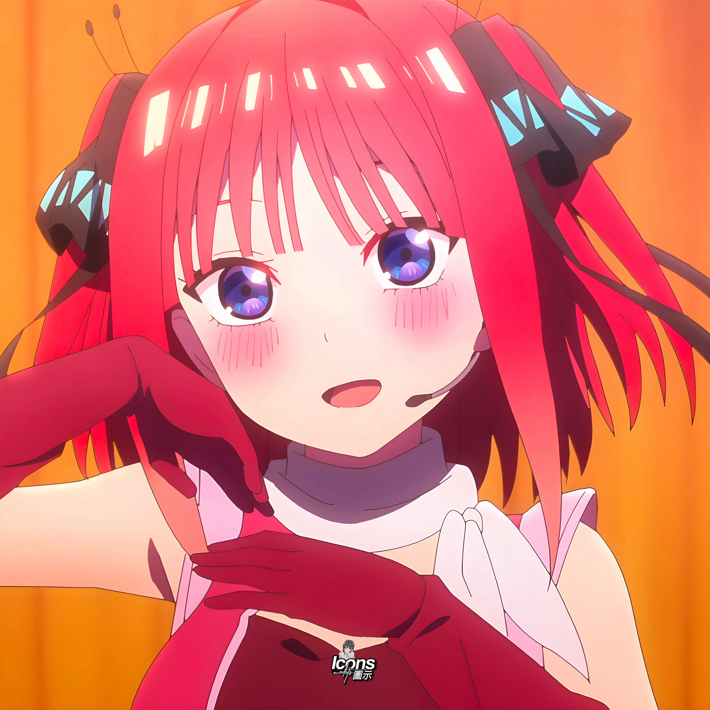
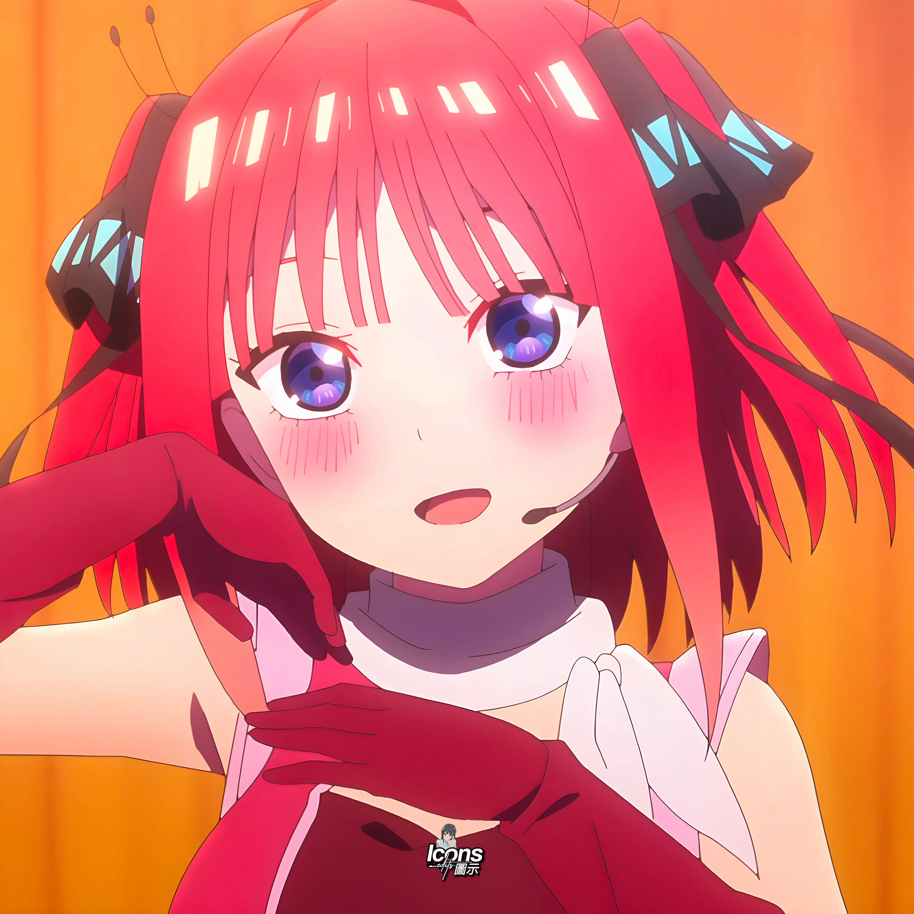
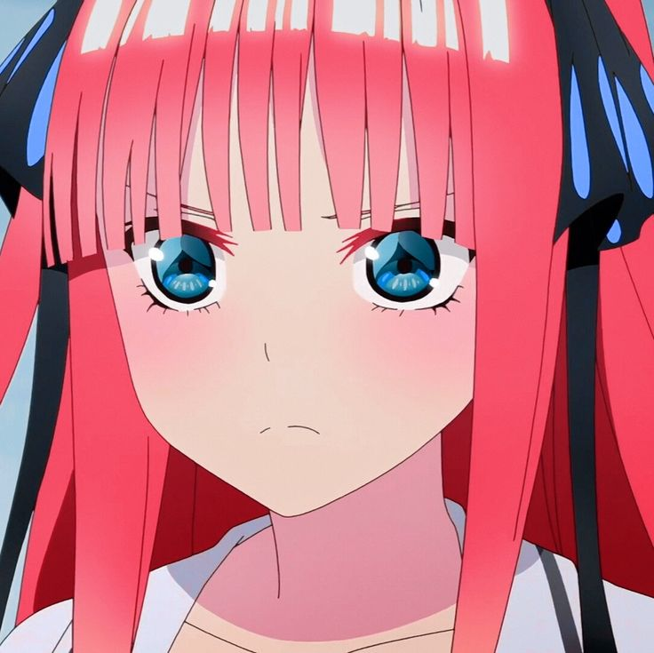
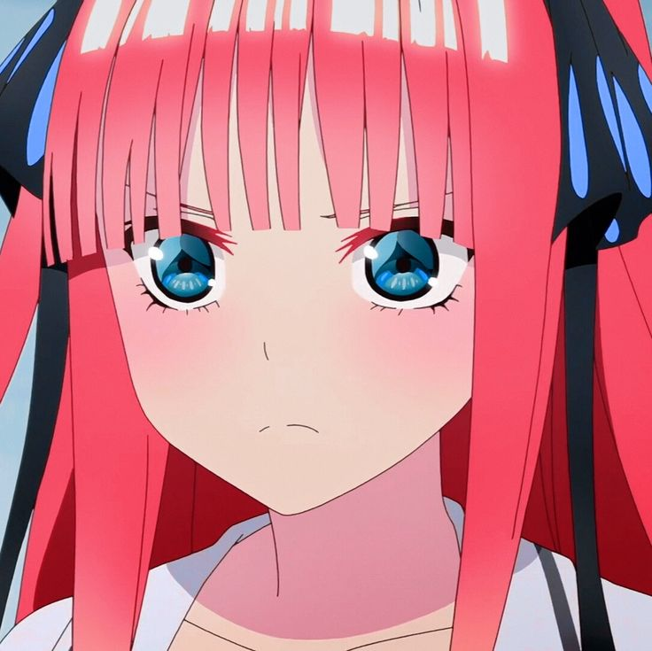

📖 ประวัติของนิโนะ
นิโนะ นากาโนะ เป็นหนึ่งในแฝดห้าจากอนิเมะและมังงะเรื่อง เจ้าสาวผมเป็นแฝดห้า (The Quintessential Quintuplets) เธอเป็นแฝดคนที่สอง มีผมสีชมพูยาว และมีสไตล์การแต่งตัวที่โดดเด่นมาก
ในช่วงแรก นิโนะเป็นคนที่ไม่ชอบฟูทาโร่เลย แต่เมื่อเรื่องดำเนินไป เธอเริ่มเปิดใจ และกลายเป็นหนึ่งในตัวละครที่พัฒนามากที่สุดในเรื่อง
💗 นิสัยและบุคลิก
- 🔥 ปากแรง แต่ใจดีมาก
- 👭 รักพี่น้องและครอบครัวสุด ๆ
- 💄 ชอบแฟชั่น แต่งตัวเก่ง
- 😤 ดื้อและมั่นใจในตัวเอง
- 💖 ถ้ารักแล้วรักจริง ปกป้องสุดชีวิต
นิโนะเป็นตัวแทนของคำว่า ซึนเดเระ อย่างแท้จริง ภายนอกดูแรง แต่ลึก ๆ เป็นคนอบอุ่นและจริงใจ
📌 ข้อมูลส่วนตัว
| ชื่อ | นิโนะ นากาโนะ |
|---|---|
| วันเกิด | 5 พฤษภาคม |
| สีประจำตัว | ชมพู 💗 |
| อาหารที่ชอบ | ขนมหวาน |
| สิ่งที่ไม่ชอบ | คนที่มาดูถูกครอบครัว |
📸 แกลเลอรี
 

 

💬 คำพูดที่แฟน ๆ ชอบ
- “ฉันจะไม่ยอมให้ใครมาทำร้ายครอบครัวของฉันเด็ดขาด”
- “ถ้าฉันรักแล้ว ฉันจะไม่หนี”
- “อย่าคิดว่าฉันอ่อนแอ”
- “ฉันเลือกเอง ว่าจะรักใคร”